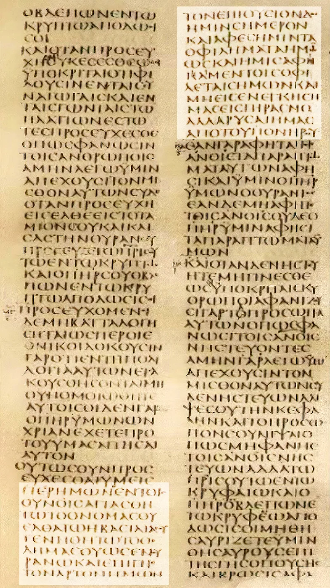
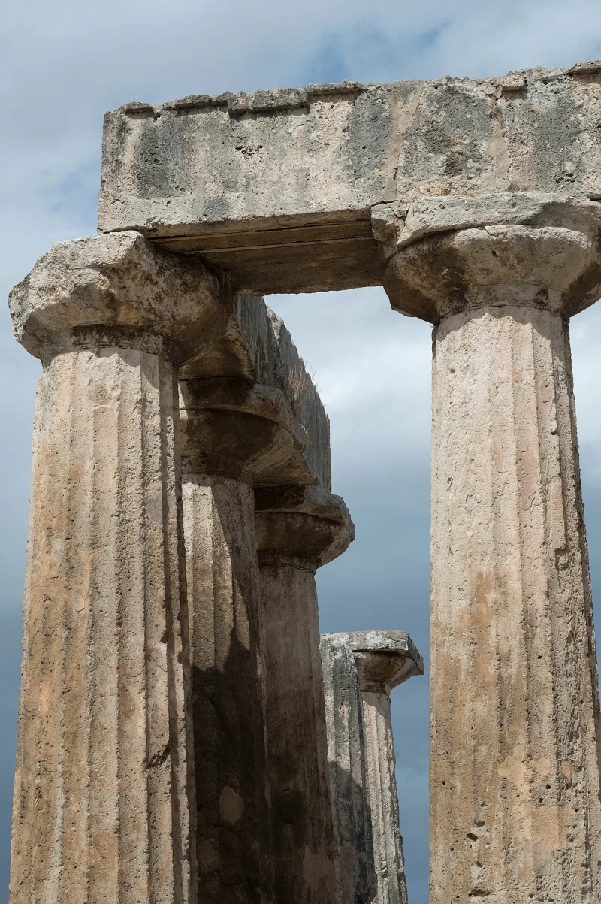

Skeptical scholars grant this themselves. Argue it from their sources, not yours.
1 Corinthians 15:3-8 was written about AD 54-55. In it Paul quotes something older than his letter.
He says he "received" it and "delivered" it. Those are the standard rabbinic words for handing on a tradition.
The wording is not his usual style. It has Hebrew-shaped features: "the Twelve," "according to the Scriptures," matched clauses.
Paul most likely received it in Damascus after he changed sides, around AD 33-36. Or in Jerusalem with Peter and James about three years later (Galatians 1:18).
This is not an apologist's date. Gerd Lüdemann, an agnostic, puts the parts of the creed within two to three years of the crucifixion.
James D. G. Dunn says the tradition was "formulated within months."
So the list was fixed public teaching while witnesses were still alive, friendly and hostile. Died, buried, raised, appeared to Peter, the Twelve, five hundred, James, all the apostles.
Legends need distance and generations. The tall tales about Alexander took centuries.
This had neither. And there was no church yet with anything to gain.
The best skeptics accept the date and turn it round. Early belief is not early proof.
Paul's word for "appeared" is the same one he uses for his own Damascus experience, which Acts describes as light and a voice, not a body you could touch. He lists his own experience alongside Peter's.
Perhaps they were all visions. The creed says nothing about an empty tomb.
And groups do produce firm supernatural convictions fast. The Millerites reworked their failed prediction within days.
Granted on all sides, from Gary Habermas to Lüdemann. It retires one common claim for good.
The resurrection is not a legend that grew over centuries. Then give the fallback honestly.
Early belief is not true belief. Move the talk to what caused the belief.
"This creed is older than the letter it sits in. Whatever started it, it started within a few years."


Early belief is not early proof; Paul's word for 'appeared' fits a vision too.
The strongest skeptical use of the creed accepts its date and turns it round. Early proof of belief is not early proof of events. The verb Paul uses for 'appeared' is the one he uses for his own Damascus experience. Acts describes that as light and a voice, not a body you could touch.
Paul puts his own vision in the same list as Peter's. Perhaps all the appearances were visions. The creed says nothing about an empty tomb.
And groups do produce firm supernatural beliefs within weeks rather than lifetimes. The Millerites reworked the Great Disappointment within days. Rapid, sincere and early — and still open to being explained as a vision hardening into a formula.
Conceded, and it kills the 'legend grew over centuries' story for good.
Conceded tier. The early dating is granted right across the spectrum, from Gary Habermas to Gerd Lüdemann. It retires for good the claim that the resurrection is a legend that grew over centuries. That claim is still common at street level, and correcting it gently is a service.
Present the creed as demolishing the legend and conspiracy timelines. Then note the skeptic's fallback honestly. Early belief is not true belief. Then pivot to the real question, which is what best explains where the belief came from.